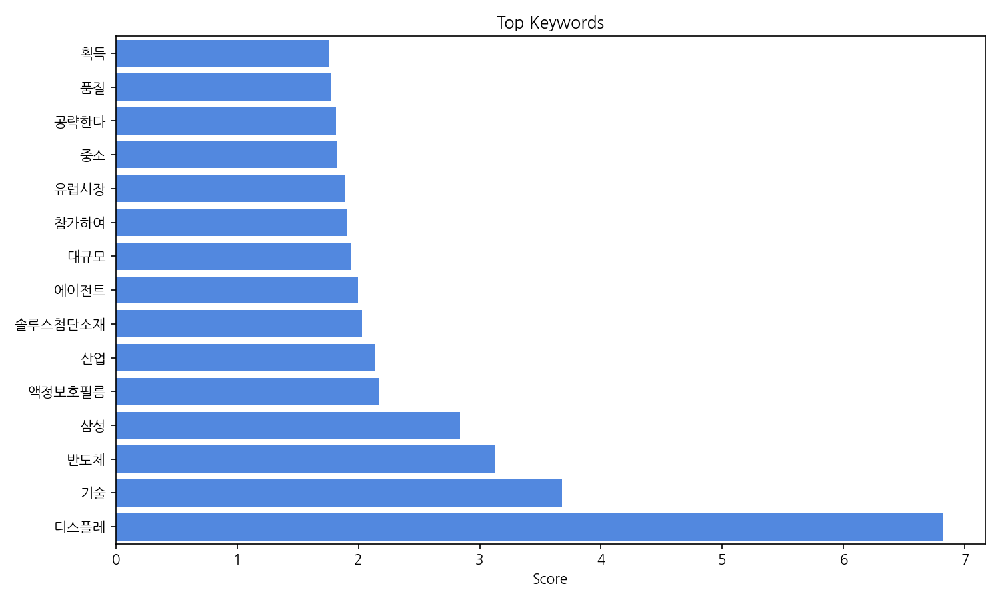
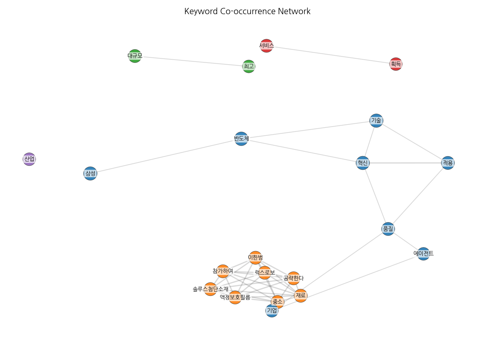
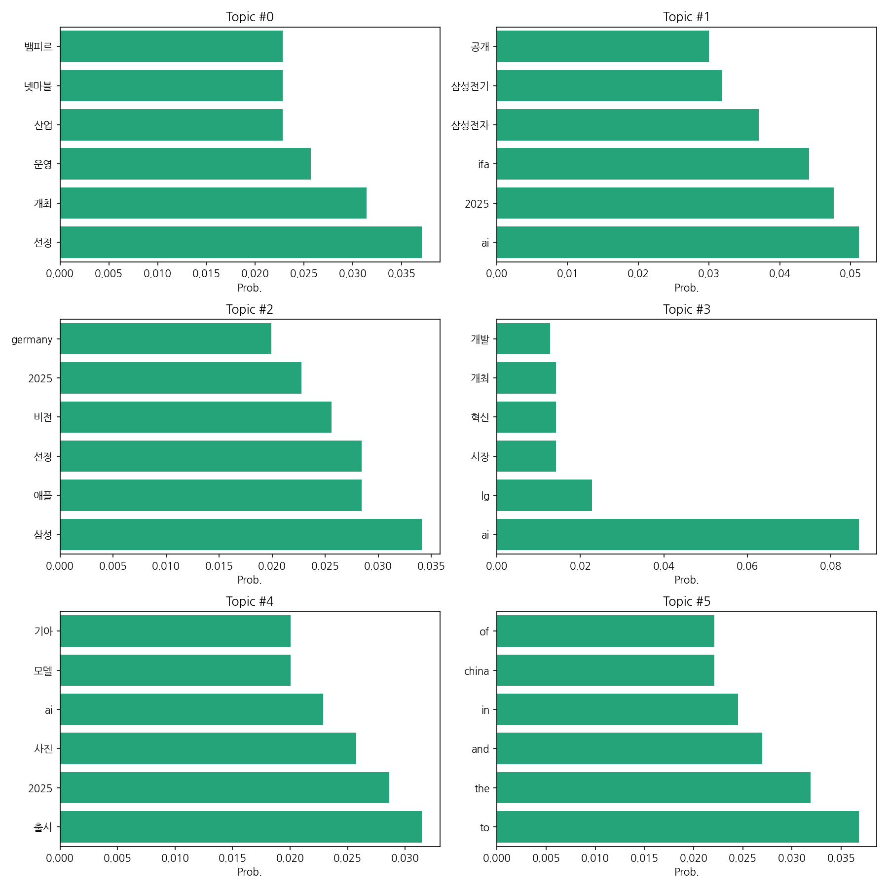
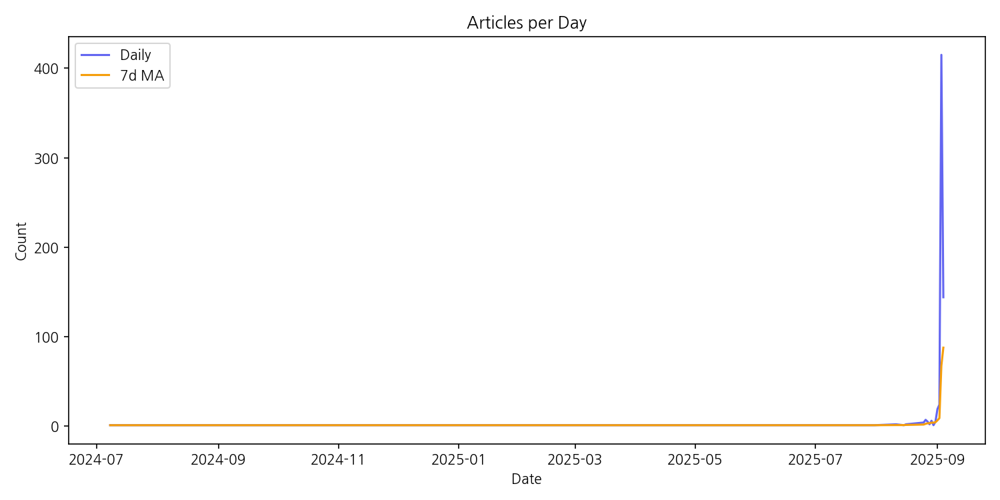

이번 기간 핵심 토픽과 키워드, 주요 시사점을 요약합니다.
핵심 맥락: 데이터는 국내 주요 기업들의 사업 전략 및 기술 동향, 특히 AI와 관련된 내용을 중심으로 구성되어 있습니다. 주요 기업인 삼성, LG, 넷마블의 산업 행사 참여, 신기술 개발 및 출시, 그리고 인재 확보 전략 등이 주요 내용이며, 2025년을 기점으로 AI 기술과 관련된 뉴스가 급증하고 있습니다. 이는 AI 기술의 발전과 시장 확대에 대한 기업들의 적극적인 대응을 보여줍니다.
최근 변화/스파이크: 2025년 9월 초에 뉴스 기사 수가 급증하는 스파이크 현상이 나타났습니다. 이는 특정 AI 관련 기술 발표나 이벤트, 혹은 시장 상황 변화에 따른 보도량 증가로 해석할 수 있습니다.
실무 인사이트:
AI 기술 동향 모니터링 강화: 2025년 9월 초의 뉴스 기사 급증 사례를 통해, AI 기술 관련 주요 이벤트 및 발표를 실시간으로 모니터링하고, 신속하게 대응할 수 있는 시스템을 구축해야 합니다. 주요 경쟁사의 AI 전략 및 기술 개발 현황을 지속적으로 추적하여 경쟁 우위를 확보해야 합니다.
| Rank | Keyword | Score |
|---|---|---|
| 1 | 디스플레 | 6.824 |
| 2 | 기술 | 3.679 |
| 3 | 반도체 | 3.125 |
| 4 | 삼성 | 2.838 |
| 5 | 액정보호필름 | 2.174 |
| 6 | 산업 | 2.138 |
| 7 | 솔루스첨단소재 | 2.029 |
| 8 | 에이전트 | 1.998 |
| 9 | 대규모 | 1.936 |
| 10 | 참가하여 | 1.903 |
| 11 | 유럽시장 | 1.894 |
| 12 | 중소 | 1.821 |
| 13 | 공략한다 | 1.818 |
| 14 | 품질 | 1.777 |
| 15 | 획득 | 1.753 |




핵심 맥락: 데이터는 국내 주요 기업들의 사업 전략 및 기술 동향, 특히 AI와 관련된 내용을 중심으로 구성되어 있습니다. 주요 기업인 삼성, LG, 넷마블의 산업 행사 참여, 신기술 개발 및 출시, 그리고 인재 확보 전략 등이 주요 내용이며, 2025년을 기점으로 AI 기술과 관련된 뉴스가 급증하고 있습니다. 이는 AI 기술의 발전과 시장 확대에 대한 기업들의 적극적인 대응을 보여줍니다.
최근 변화/스파이크: 2025년 9월 초에 뉴스 기사 수가 급증하는 스파이크 현상이 나타났습니다. 이는 특정 AI 관련 기술 발표나 이벤트, 혹은 시장 상황 변화에 따른 보도량 증가로 해석할 수 있습니다.
실무 인사이트:
AI 기술 동향 모니터링 강화: 2025년 9월 초의 뉴스 기사 급증 사례를 통해, AI 기술 관련 주요 이벤트 및 발표를 실시간으로 모니터링하고, 신속하게 대응할 수 있는 시스템을 구축해야 합니다. 주요 경쟁사의 AI 전략 및 기술 개발 현황을 지속적으로 추적하여 경쟁 우위를 확보해야 합니다.
| Idea | Target | Value Prop | Score |
|---|---|---|---|
| AI 기반 스마트 팩토리 솔루션 제공 | 국내 중소 제조업체 (직원 수 100명 미만, 연매출 50억 미만) | AI 기반의 사용자 친화적인 스마트 팩토리 솔루션을 통해 생산성을 향상시키고 불량률을 감소시키며, 유지보수 비용을 절감할 수 있도록 지원합니다. 클라우드 기반 서비스 제공으로 초기 투자 비용을 낮추고, AI 알고리즘을 통해 실시간 데이터 분석 및 예측 기능을 제공하여 효율적인 생산 관리를 가능하게 합니다. 경쟁사 대비 저렴한 가격과 간편한 사용법을 제공합니다. | 3.8 |
| AI 기반 개인 맞춤형 건강 관리 서비스 | 건강에 대한 관심이 높으나 시간적 여유가 부족한 20-40대 직장인, 특히 만성 질환 예방 및 관리에 관심 있는 고객 | AI 기반 개인 맞춤형 건강 관리 서비스는 사용자의 생활 습관, 건강 상태, 유전 정보 등을 분석하여 개인에게 최적화된 건강 관리 계획을 제공한다. AI 챗봇을 통해 24시간 건강 상담 및 관리를 받을 수 있으며, 개인 목표 달성을 위한 동기 부여 및 커뮤니티 기능을 제공하여 지속적인 건강 관리를 지원한다. 기존 서비스와 달리 개인의 특성과 상황에 맞춘 맞춤형 정보와 관리를 제공하여 효과적인 건강 개선을 돕는다. | 3.8 |
| AI 기반 스마트팜 솔루션 제공 | 국내 중소 규모 농가 (경지 면적 10ha 미만, 연매출 5억 미만) | 본 솔루션은 AI 기반의 영상 분석 및 데이터 분석 기술을 활용하여 작물의 생육 상태를 실시간으로 모니터링하고, 최적의 환경을 제공합니다. 사용이 간편한 인터페이스와 저렴한 가격으로 농가의 접근성을 높였으며, 작물별 맞춤형 관리를 통해 생산성 향상을 지원합니다. 경쟁 솔루션 대비 낮은 구축 비용과 높은 사용 편의성을 제공합니다. | 3.8 |
| AI 기반 맞춤형 교육 콘텐츠 플랫폼 | 개인 학습자(대학생, 직장인 등), 기업의 직무 교육 담당자 | AI 기반의 플랫폼을 통해 학습자의 수준과 목표에 맞춘 교육 콘텐츠를 추천하고, 학습 과정을 실시간으로 분석하여 개인별 학습 경로를 최적화합니다. 학습자의 흥미를 유지하기 위한 게임화 요소와 커뮤니티 기능을 제공하여 지속적인 학습 동기를 부여합니다. 경쟁 플랫폼 대비 AI 기반의 개인화된 학습 경로 추천 및 실시간 피드백 기능을 통해 학습 효율을 극대화합니다. | 3.5 |
| AI 기반 중소기업 맞춤형 마케팅 솔루션 | 국내 중소 제조업체 (직원 수 50명 미만, 연매출 10억 미만) | AI 기반의 데이터 분석을 통해 중소기업의 특성에 맞는 최적의 마케팅 전략을 제시합니다. 경쟁사 분석, 고객 세분화, 채널별 효과 측정 등을 자동화하여 시간과 비용을 절감하고, 효율적인 마케팅 운영을 지원합니다. 복잡한 기능 없이 간편하게 사용할 수 있는 직관적인 인터페이스를 제공합니다. | 3.5 |